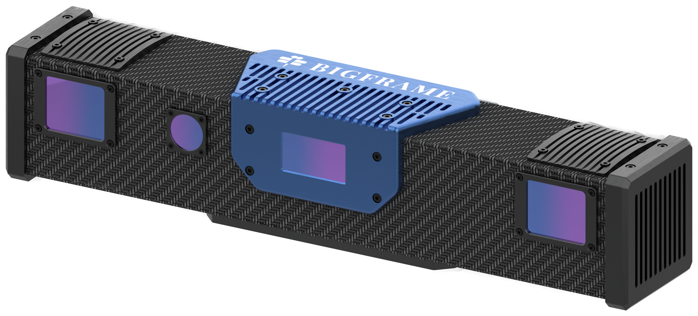

Large scenes at {{ near.wd/1000 }} to {{ far.wd/1000 }} m from a bar above the dock, the cell or the conveyor; a color image registered to every point.

The PRS covers the largest scenes in the range — a pallet, a vehicle, a container, a stack on a dock — from one capture, with the color image the operator needs to see what was measured.
At {{ opt.wd/1000 }} m the field of view of {{ "%.2f"|format(opt.fov_w/1000) }} × {{ "%.2f"|format(opt.fov_h/1000) }} m covers a Euro pallet with margin; layer height and carton positions come from one capture.
Choose the VR-2300B where the finest point spacing at 2 to 4 m matters and no color image is needed; the VRD-1200B for a camera on the arm; the PRS where a scene of 2 m or more must be covered from a fixed mount with a color image.
The {{ p.model }} is specified at three working distances from {{ near.wd/1000 }} to {{ far.wd/1000 }} m (table on page {{ p.page_fov }}); at {{ far.wd/1000 }} m the field of view of {{ "%.2f"|format(far.fov_w/1000) }} × {{ "%.2f"|format(far.fov_h/1000) }} m covers a container door with margin; at {{ near.wd/1000 }} m it is {{ "%.2f"|format(near.fov_w/1000) }} × {{ "%.2f"|format(near.fov_h/1000) }} m.
| Model | Field of view at optimum WD (mm) | Working distance near / optimum / far (mm) | XY point spacing (µm) | Z repeatability 2σ (µm) | Color image | Mounting | {{ r.model }}{% if r.note %} {{ r.note|replace('¹','1') }}{% endif %} | {{ r.fov }} | {{ r.wd }} | {{ r.spacing }} | {{ r.z }} | {{ r.color }} | {{ r.mount }} | {% endfor %}
|---|
1 PRS: preliminary specification; Z repeatability {{ p.z_repeatability_um }} µm, method to be stated at launch.